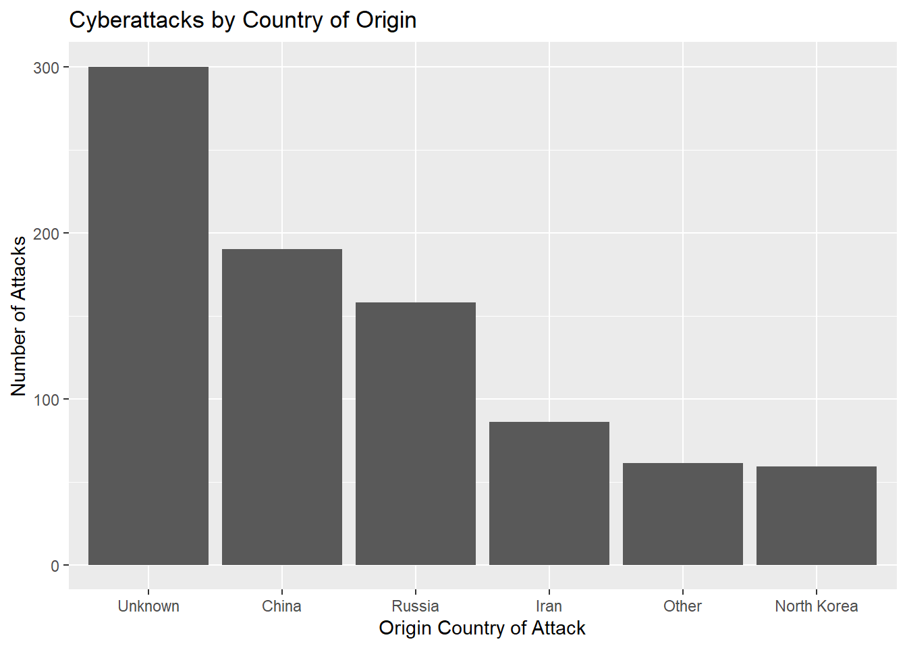

Chapter 4 Results
4.1 Temporal Analysis of Cybersecurity Incidents
There is a clear upward trend in the number of significant cyber-related incidents around the world over the years. Prior to 2017, the total number of incidents did not exceed fifty per year. Within a short span of three years, this number approximately doubled from 70 in 2017 to 140 in 2020. In 2021, the number of recorded incidents bucked the trend and fell by over 50 cases from 2020. This could be because of the increased awareness of the importance of good cyber hygiene with additional resources and measures to strengthen cybersecurity globally.
Note that the data for 2022 consists of incidents from January to September 2022. This value has also marginally surpassed three quarters of the total number of incidents in 2021. This could mean that the peak in 2020 was an anomaly, but still gives credence to the rising trend in number of cybersecurity incidents worldwide.

From the line graph, there are also unusually high peaks in the number of incidents, both in May 2013 and October 2020.
From the bar plot, October 2020 has a rather high number of attacks against the United States. There might be some correlation with the Presidential Elections of 2020. On the other hand, the attacks in May 2013 were not disproportionately directed towards any particular country, so it is unlikely that any single major world event caused the spike in number of incidents.
4.2 Hacker and Victim Analysis

Using a reasonable cutoff = 50, we can see the major attackers over the years. The majority of attacks were from unknown sources, which makes sense as there are numerous private organizations and individuals that carry out cyberattacks. Following which, cyberattacks were attributed to China, Russia, Iran and North Korea in decreasing number of incidents. The aggregated attacks carried out by other governments fall between the number of Iranian and North Korean attacks. These statistics seem to be in line with the reports of Western media.
Using a reasonable cutoff = 30, we can see the major victims over the years. We can see that the majority of attacks are on the “Other” category of countries, suggesting that cyberattacks are relatively spread out across many countries. Still, the next highest number is the United States, followed by a sharp drop in number for unknown victims (non-country specific) followed by other individual countries such as India, Iran, the UK, Israel, Ukraine and China.
The same data obtained previously can be represented with a Cleveland Dot Plot as shown above. By combining the total number of times each country was on the offensive and the number of times each country was hacked on the above plot, it is clear that some countries like China, Russia and Iran are more proactive in directing cyberattacks with many more attacks originating from them than against them while others like the United States and India orchestrated much fewer number of attacks vis-a-vis the number of times they were victims of these hacks.
4.3 Type of Cyber Attack
This graph shows the types of attacks carried out. Most are unknown, after which data exfiltration and malware are the next most common.
Next, we try to categorize the victims and attack types into fewer categories, and apply an alluvial diagram between the combination of attacker, hacktype and victim to see if there are any patterns that can be identified. The rationale to use an alluvial diagram is that a cybersecurity incident could be viewed as a chronological flow, where the idea of attacking originates from a source country (attacker), moves to the specific type of attack, then flows to a victim country.
The chart is messy and has too many groups, which makes it hard to see any patterns. We can try with geom_flow, but most likely it would be better to do a pairwise comparison.
The alluvial diagram for hacktype and attacker seems to show some differences in choice of attack for different countries. Iran, North Korea, Others and Unknown origin seem to choose attack types that are rather similar to the overall proportion of attack types (i.e. most of their attack types are unknown, followed by data exfiltration, other, and malware). However, the largest source of cyberattacks, China, heavily favors data exfiltration. On the other hand, Russia has a large percentage of Unknown and Other types of hacktypes, and a very small proportion of data exfiltration in comparison.
Most of the flows from attacker to victim seem to be in line with the overall proportion, but China and Unknown attackers seem to have a slightly higher chance of targeting the United States.
Finally, the hacktype to victim alluvial diagram shows a roughly equal spread of each attack type targeting the victim countries, but data exfiltration seems to appear slightly more for the United States.
4.4 Targeted Industries

Finally, when we look at the industries targeted, the largest number of incidents target governments followed by defense. This fact suggests that majority of cyber incidents are politically motivated. On a global scale, governments have to strengthen their policies and technical abilities in order to protect their digital assets from malicious actors.
There were over 50 incidents that involved companies in the finance industry, which shows that cyber criminals are also driven to hack others due to potential financial gains.